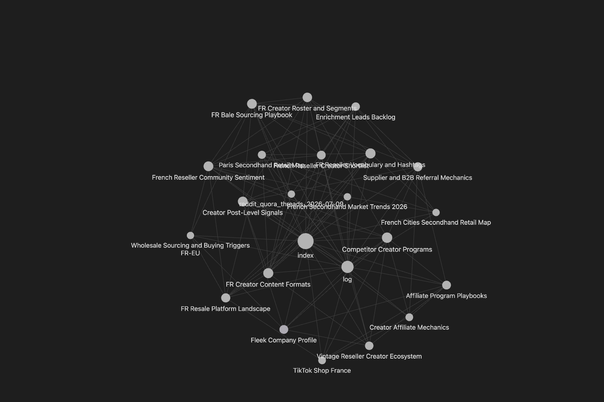
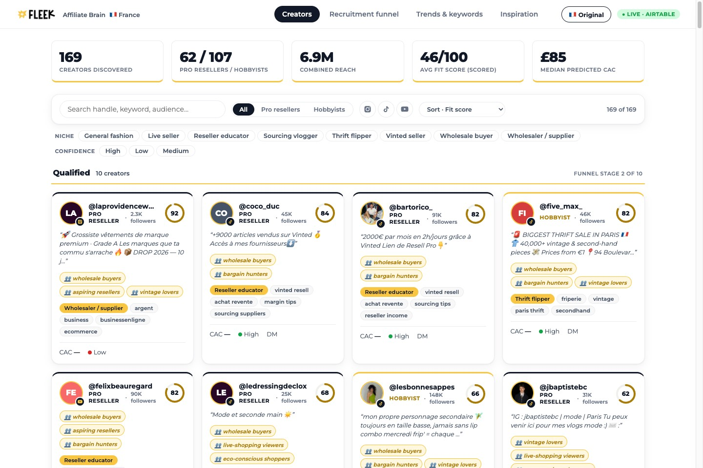
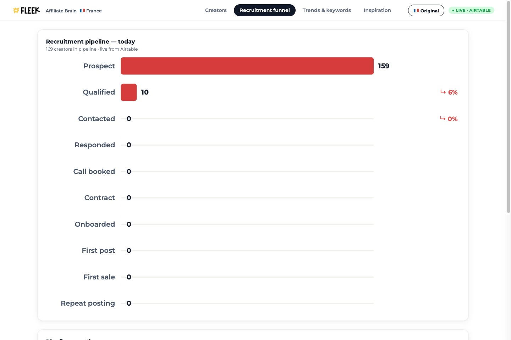
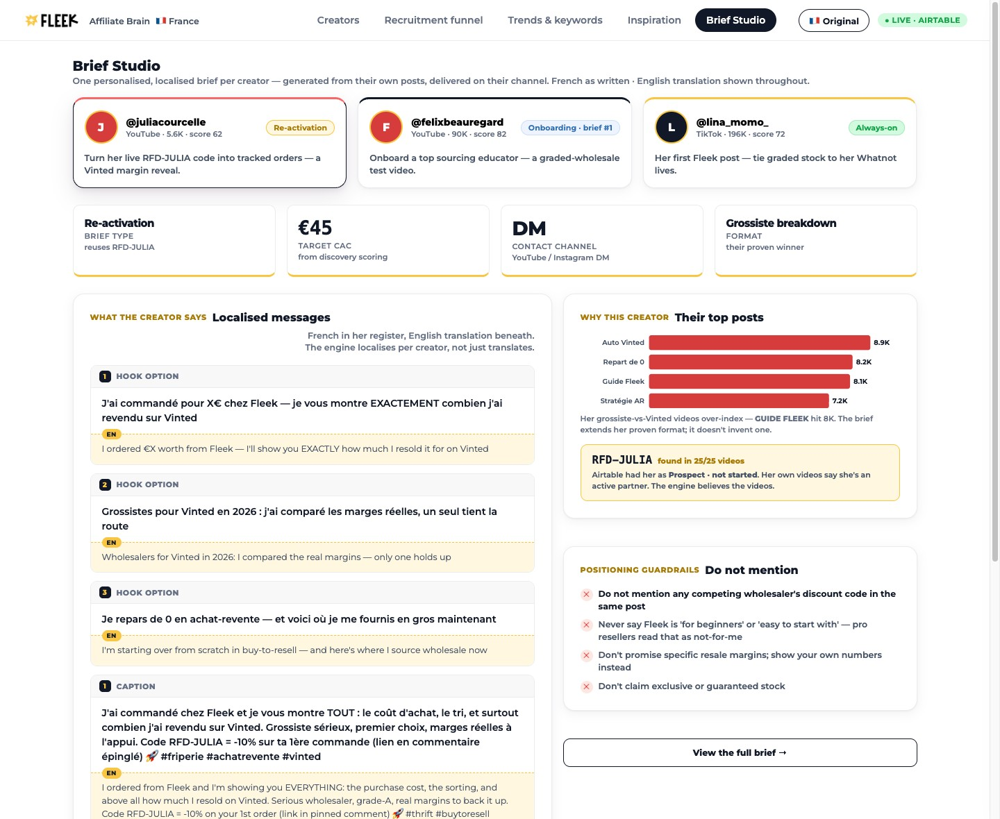

Influencer Marketing Manager · case study · owning France
"How would you take this from
10 to 10,000 influencer leads?"
Your brief, your words. So I didn't bring a list of creators — I built the affiliate engine: "something that would still work if France was 500 creators instead of 10." Deployed, running, receipts attached.
Doug Woolfenden · github.com/dougal-25/fleek-affiliate-content-engine · fleek-affiliate-dashboard.vercel.app
Executive summary — one engine, five parts of your brief
The task wasn't a shortlist. It was the pipeline behind one.
| Your brief | What I built | Slides |
|---|---|---|
| Foundation | Context window + stack — the wiki that teaches the engine French resale | 03–04 |
| 1 · The French shortlist | Discovery engine + live dashboard — 169 scored creators, filterable | 05–06 |
| 2 · Signal from noise | Scoring framework + the call table — who's in, out, and why | 07–08 |
| 3 · Outreach | Personalised FR drafts — from their own posts; human sends | 09–10 |
| 4 · Activation briefs | Brief generator — per-creator, from what converted | 12 |
| 5 · GTM, budget, CAC | Deterministic allocator — money follows measured CAC | 13 |
● The stack — every piece API-driven, so every piece schedulable
Nine tools. One engine. No Zapier.
Rule of thumb: Perplexity teaches the engine, Apify feeds it, Claude judges, Python moves money.
● live · claude code + perplexity · phase 0 — architecture & context window
Step 1: build the context window, not the shortlist.
Before any discovery: build the engine's context window. Scrape and synthesise a cited FR-resale knowledge base — from the creators Fleek named and the French market itself — that every downstream job reads: discovery keywords, scoring weights, outreach tone.
wiki-knowledge-base-builder · Perplexity sweep, 25 questions
→ rejected as too thin → deep-reads of named FR primary sources
+ post-level scrape of Fleek's own named partners

● live · apify + claude · section 1 — discovery
Scrape both platforms, gate hard, recommend — never auto-qualify.
Run market-driven discovery for France on both channels: TikTok hashtag scrape on the wiki's validated lanes + Instagram graph-walk from verified reseller seeds. Gate on reseller lexicon, clothing vertical, supplier filter. Score and upsert to Airtable, keyed platform:handle.
tiktok #friperie #secondemain #revente #achatrevente #fripe… instagram graph-walk 2 hops from @juliacrcl @nathanvialle @saw2hands gates genuine reseller AND clothing AND not a supplier
Those are the affiliates, that is the type of affiliate, not the audience… perhaps the scoring system doesn't work
2026-07-10 00:43 — The model filed "pro reseller / hobbyist" under audience when they're affiliate types. Schema errors are the expensive kind: they look like working code.
● live · airtable → vercel · part 1b
The roster isn't a spreadsheet.

fleek-affiliate-dashboard.vercel.app — deployed, data fresh from Airtable, credentials redacted server-side. Open it live in the room.
Built in Fleek's own brand — Montserrat, coral, gold — so it reads as their product, not an admin panel. Ships live and as one offline HTML file.
● live · section 2 — scoring & framework · calibrated on Fleek's real partners
The score predicts one thing: will their audience buy stock.
Half the score: the customer is the viewer, not the creator. Pro 1.0 · hobbyist 0.8 · fashion ~0.
Sourcing, kilos, marges — a haul channel isn't a sourcing channel.
Do they demonstrably resell — Whatnot, Discord, coaching? Trust converts.
Mentions Fleek / carries RFD-. Small on purpose: a tiebreak, not a strategy.
Followers: 0 points. Confidence is a gate, not points.
Does it agree with reality?
| Creator | Fit | Truth |
|---|---|---|
| @behindthesale | 77 | named Fleek partner — ranks 1st |
| @juliacrcl | 71 | named Fleek partner — ranks 2nd |
| @nathanviall3 | 63 | pro seller, hobbyist audience |
| @giu.cst | 10 | 253k followers, wrong audience |
| @juliettekitsch | 1 | aesthetic, zero resale intent |
Both known-good partners rank top-2; both known-wrong score <10. n=5 — an anchor, not a training set, and labelled so.
the bar is a percentile of the live distribution, not an absolute number
2026-07-10 — My hard-coded cutoff of 70 rejected
@juliacrcl, a Fleek partner scoring 62. Doug made the bar the top ~50% of the live roster —
it lands exactly where the proven partner sits.
● live · the roster, called — qualify · watch · cut
Who's in, who's next, who's out — and why.
| Creator | Fit | Pred. CAC | Segment | Why | Call |
|---|---|---|---|---|---|
| @coco_duc | 84 | — | Reseller educator | 9,000+ Vinted sales, teaches sourcing to FR resellers | QUALIFIED |
| @bartorico_ | 82 | — | Reseller educator | 91k followers actively seeking sourcing | QUALIFIED |
| @felixbeauregard | 82 | £350 | Reseller educator | teaches Vinted resale — but runs his own supplier funnel; watch the margin | QUALIFIED |
| @artifycevintageclothing | 62 | £45 | Thrift flipper | nano tier — the cheap-CAC lane, trust density highest | QUALIFIED |
| @juliacrcl | 100 | — | Thrift flipper | ⚠ likely existing Fleek partner — re-activation, never a cold pitch | WATCH |
| @saw2hands | 76 | — | Live seller | 111k Whatnot sales, 2.4k followers — invisible to follower floors | WATCH |
| @giu.cst | 10 | — | General fashion | 253k followers, best engagement in set — audience is sellers, not buyers | CUT |
| @alex_yeddertcg | — | — | Off-vertical | passed every IG gate; TikTok bio: Pokémon TCG — second platform = lie detector | CUT |
| @50.grass | — | — | Off-vertical | perfect pro lexicon — sells synthetic lawn; forced the clothing gate | CUT |
CAC = model band, — where evidence is thin (roster median £85). Per-creator LTV needs Fleek's order data — the day-one ask.
● live · claude · section 3 — outreach · personalisation · localisation
The engine drafts. A human sends. Always.
qualification is the trigger. Personalise from what they actually post. First names, never handles, never invented. And it still never sends.
run_outreach.py --qualified
recent posts + captions + audience comments + profile keywords
→ observation → value palette pick (wiki-sourced facts only)
→ 3-touch FR sequence · no send code path exists in the repo
known partners stay in the pipeline, flagged — visibility beats removal
2026-07-10 — I'd hard-excluded Fleek's known partners so the engine couldn't cold-pitch them. Doug overturned it: hiding protects by making the risk invisible; a ⚠ VERIFY banner protects by informing the human. Nothing sends, so visibility wins.
● live · a real draft, unedited · section 3 — localisation
What the engine saw, and what it wrote.
It saw — @gdefou, reseller educator
Observation first, pitch second: his problem is the opening line, Fleek is the answer to his promise — not a generic intro.
It wrote — touch 1 of 3, French first
« Ta vidéo sur le faux sur Vinted, t'as raison… Le souci après, c'est que ta 'vraie stratégie' bute sur le sourcing — trouver du stock légit et rentable en volume. On fait du sourcing en gros pour les revendeurs, tout tracé et gradé. Je te dis en deux mots comment ça branche sur ton audience ? »
"Your video on fakes on Vinted — you're right… The problem after that is your 'real strategy' hits a wall on sourcing: finding legit, profitable stock at volume. We do wholesale sourcing for resellers, all traced and graded. Two lines on how it plugs into your audience?"
● live · airtable · part 3, the funnel
The engine recommends. A human qualifies. Nothing skips the gate.

Live from Airtable. Honest, not impressive — nothing is past Qualified because outreach never auto-sends. The funnel is a view of the same database, not a second system.
The agent, once a lead is qualified
qualify.py @handle — Prospect → Qualified releases the agentScheduled, this runs itself: every new Qualified gets drafts waiting by morning. The two gates never come off.
qualifying a creator stays a manual approval until the system is consistent — we want to work with them
2026-07-11 — The first run auto-qualified 39 creators on score alone. Doug turned it off and I migrated all 39 back to Prospect + Recommended. The engine suggests with reasons; the human curates.
● live · brief studio · section 4 — activation, "the whole game"
Every brief is deliberate — built from what already worked for them.

dashboard → Brief Studio — a real brief per creator: type, target CAC, channel, format, hooks, FR/EN, guardrails.
The context the brief agent gets
- Their top posts — Trends & Inspiration surface what over-indexes; the brief extends their proven format, doesn't invent one.
- Their signals — segment, keywords, audience, RFD- code from their own videos.
- Guardrails — never "for beginners", never a rival's code, never an unprovable margin.
More posting without paying more per post: pay in sourcing advantage — commission and wholesale margin, only Fleek offers both.
● simulated allocator · section 5 — budget, CAC & the moat
The moat isn't the model. It's Fleek's data flowing through it.
Today, honestly: CAC is reach-weighted, so it ranks Fleek's own best partners badly.
Fit selects; CAC constrains. Predicted CAC ships as a band — £ / ££ / £££
— never a false-precision point, because the three inputs that make it real are Fleek's:
funnel rate, first-order AOV by tier, LTV by segment.
Why that's the opportunity, not the gap: every signed partner, every referral order, every repeat post feeds proprietary data no competitor has. The model gets more verifiable against real CAC and LTV each month — and the more it matures, the more of the allocation Fleek can safely automate.
never let a model allocate spend — code computes CAC, allocates budget, measures attribution
standing rule — Even "trusted" auto-allocation stays bounded and human-set. Models write judgement (briefs, profiles); deterministic code moves money. That line doesn't move as the data matures — it's why the data can be trusted.
The engine on autopilot — the answer to "how does this scale?"
There is no 6am Monday. It's constantly on.
Each stage is an API call, so the whole loop runs on a scheduler — no laptop, no 6am. The one gate that's manual today is qualification; the roadmap automates it on the scoring framework as the data proves out, with a manual override that never goes away.
The loop feeds itself: measure → re-weight → better briefs → more posting → more data. Two permanent gates hold: nothing sends to a creator, no model moves money.
Why it survives me leaving
Knowledge in the wiki, intent in spec/, constants in mission/, judgement in a
scoring rubric anyone can read and argue with. The whole build cost less than a day of agency time.
spec/autonomy-layer.md
● not a slide — a running system · let's walk through it
It's live, and ready for your data.
This isn't a mockup and it isn't finished-and-frozen — it's a system ready to ingest Fleek's
own affiliates and proprietary data. Point run_discovery at your roster, wire in
your order data, and the scoring, briefs and CAC sharpen against real outcomes from day one.
Everything you've seen is one repo + one live dashboard — fleek-affiliate-dashboard.vercel.app. Clonable, runnable, redacted.
github.com/dougal-25/fleek-affiliate-content-engine · pip install -r requirements.txt
The plan — 30 · 60 · 90
Understand what Fleek has. Then activate it. Then trust the data.
The whole build — every prompt, failure and reversal — is
on the record: deliverables/evidence/, verbatim from the raw transcripts. Working natively
with AI isn't trusting it; it's knowing the question that catches it.